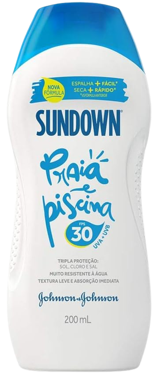
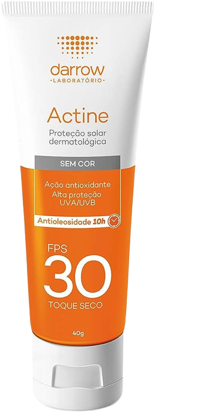

Como a pele reage ao sol
Desvendando o protetor solar
Diferentemente da pele branca, a pele morena clara a sensibilidade é normal quando exposta ao sol. A pele nesse caso tem uma leve sensibilidade ao sol, porém, conseguem se bronzear e ficar exposta ao sol por um tempo maior usando o protetor solar, mesmo tendo mais melanina e uma proteção natural maior, o uso do protetor solar é indispensável. Neste caso é indicado o uso de protetor solar com FPS a partir do fator 30, esse fator indica que a pele demorará 30 vezes mais para ficar vermelha do que se não tivesse passado o protetor.

